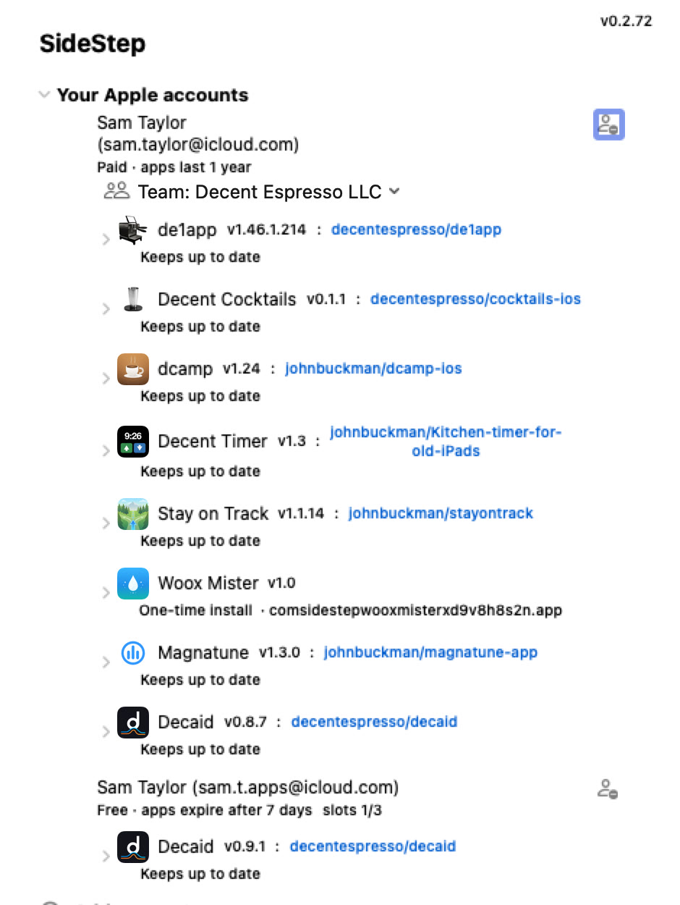
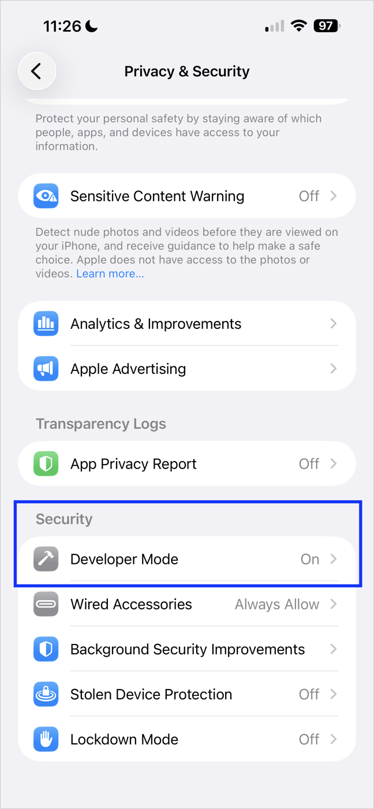
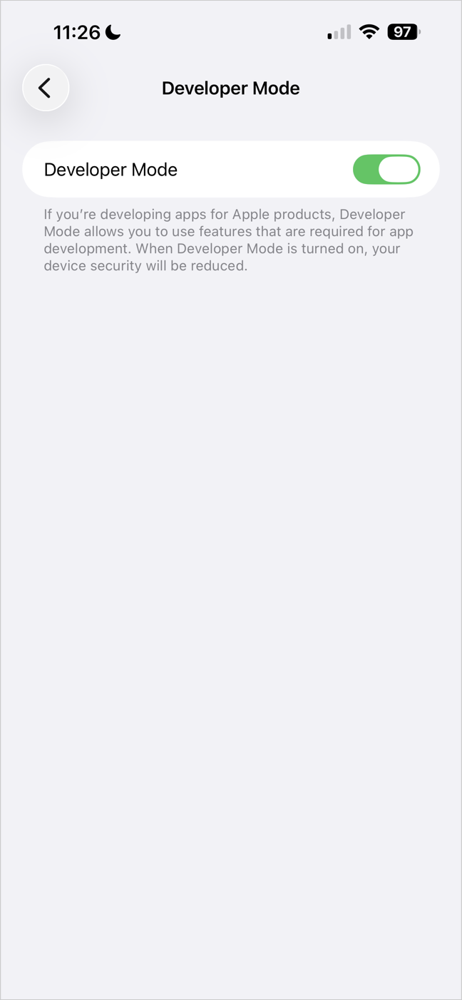
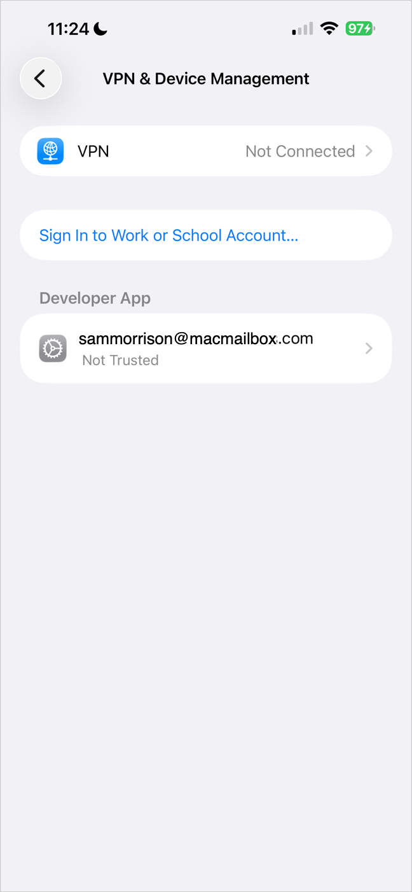
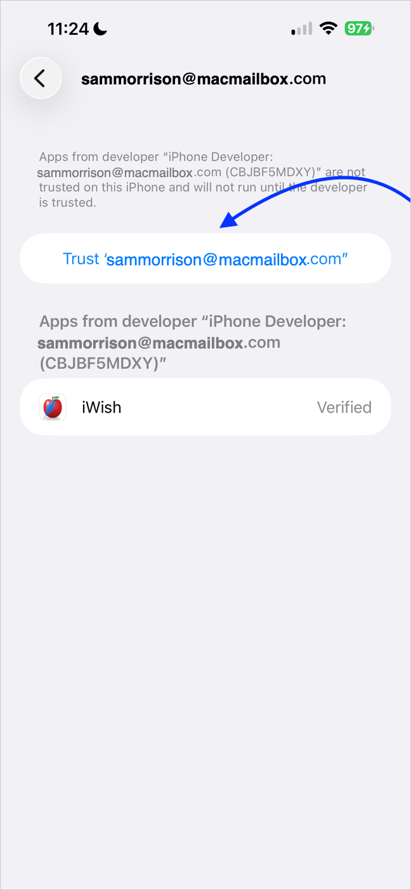
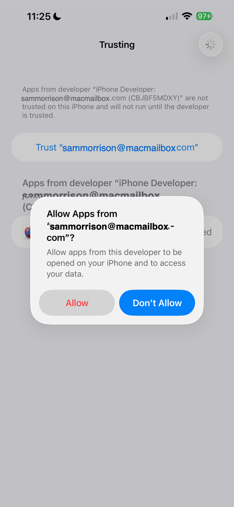
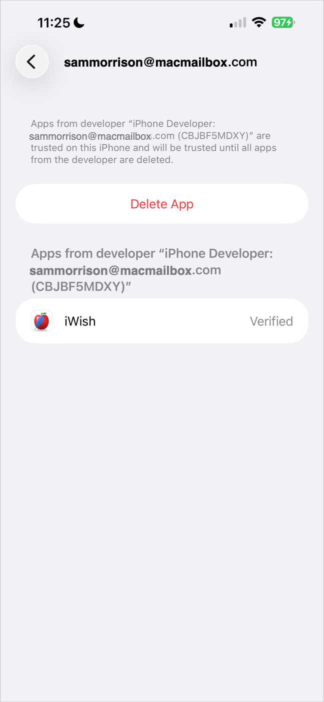
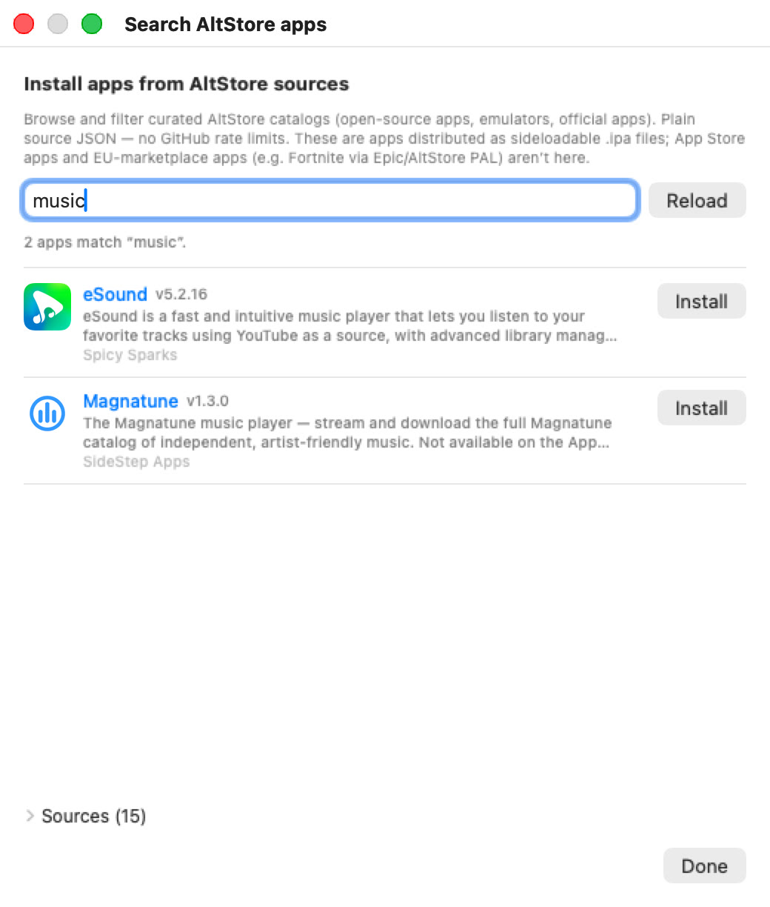
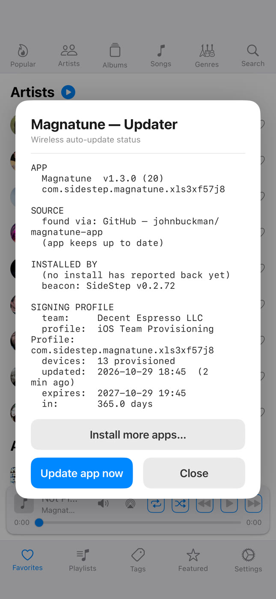

SideStep
SideStepSideStep Help
SideStep is a small Mac menu-bar app that puts iOS apps on your own iPhone or iPad using your own Apple ID (a free one works), with no App Store, no jailbreak and no special hardware. Then it keeps them signed and up to date by itself, over a cable or over Wi-Fi, so they behave like normal, permanently installed apps.
🚀 Getting started
Download SideStep, open the .dmg and drag SideStep to Applications. It's signed with an Apple Developer ID and notarized by Apple, so it opens like any other app.
- It lives in the menu bar — a small box icon at the top of your screen, with no Dock icon. Click it to open the SideStep panel.
- It starts when you log in — SideStep turns this on the first time it runs, because it can only keep your apps signed while it's running. You can switch it off in Settings.
- What you need — a Mac with macOS 14 or newer, an Apple ID, and an iPhone or iPad with a cable for the first install.

The SideStep panel: your Apple accounts, the apps on each device, and ways to install more.
The first time, it takes about five minutes:
- Sign in with an Apple ID (Apple accounts).
- Plug in your iPhone or iPad and get it ready (Getting your device ready).
- Pick an app and install it (Finding apps).
- On the device, trust your Apple ID once, then open the app.
If an app developer sent you a “… installer” file, open that instead: it installs SideStep and walks you through every step (One-click installers).
👤 Apple accounts
SideStep signs apps with your own Apple ID, the same way Xcode does for developers. There's no SideStep account and no SideStep server: your login goes only to Apple.
- Sign in — click Add account in the panel, enter your Apple ID and password, then the two-factor code Apple sends you.
- No other Apple device? — tick “Text me the code” to get the code by text message instead.
- Free or paid — a free Apple ID works. Apps signed with it last 7 days (SideStep renews them for you) and you can have 3 apps per device at once; the “slots” count shows how many you've used. A paid Apple Developer account ($99 a year) signs apps for 1 year with no app limit.
- More than one account — add several Apple IDs to get more free slots. When you install, SideStep asks which account to use, and lists first the one already used for that app.
- Teams — if your Apple ID belongs to more than one developer team, pick one from the Team menu under the account. Each team shows how long its apps last.
- Your password stays on your Mac — it's kept in the macOS Keychain so SideStep can sign in again by itself when Apple's session runs out. You'll only be asked again if Apple wants a new code.
- Remove an account — the person-minus button next to the account.
Use each Apple ID on one Mac only. If another Mac on your network already runs SideStep with the same Apple ID, SideStep says so and won't sign in, so two Macs never fight over the same apps.
📱 Getting your device ready
The first install for each iPhone or iPad needs a cable and a few one-time taps on the device.
- Trust this computer — plug the device into your Mac, unlock it and tap Trust when it asks.
- Developer Mode — iOS 16 and later only run apps like these with Developer Mode on. If it's off, SideStep switches it on for you where it can and opens a short guide: Settings ▸ Privacy & Security ▸ Developer Mode, switch it on, let the device restart, then tap Turn On. Then install again. Older devices don't need it, and SideStep says so.
- Trust your Apple ID — after the first app installs, open Settings ▸ General ▸ VPN & Device Management, tap your Apple ID, then Trust. You do this once per Apple ID: every later app from the same account is trusted automatically.
- Wi-Fi from then on — during the first cable install SideStep also switches on the device's Wi-Fi connection to your Mac, so later installs and updates can happen without a cable while the device is unlocked and on the same network.






⬇️ Installing an app
However you choose an app (see Finding apps), the install goes the same way.
- Choose the device — SideStep asks “Do you want to install …?” and lists every device it can reach, marked USB or Wi-Fi, and whether Developer Mode is off. It asks even when there's only one, so nothing installs by surprise.
- Watch it go — a window shows each step: downloading (with size and time left), signing, copying to the device and installing. Hide tucks it away; the install carries on.
- Done — the app appears on the Home Screen and in the SideStep panel under the Apple ID that signed it. The first time for each Apple ID, SideStep reminds you to trust it on the device.
If Apple won't register another device on your Apple ID (free accounts have a yearly limit), SideStep offers to use one of your other Apple IDs instead.
🔎 Finding apps
The Install section of the panel has six ways to choose an app.
- Search AltStore — browse and search a catalog of legitimate sideloadable apps gathered from curated AltStore sources, starting with SideStep's own. Type to filter, click a name for more about it, click Install. Under Sources you can add another source's address or remove one.
- Install from GitHub — type a repository as
owner/name, or paste its address. SideStep installs the newest .ipa from its Releases and keeps following new releases. Type just a username to see all of that person's apps. - Search GitHub — search GitHub by app name or keywords. It's best-effort, because GitHub can't search inside release files, so installing by
owner/nameis more reliable when you know it. - Install from .ipa — choose an .ipa file (or .app) on your Mac. You can also just double-click an .ipa in Finder.
- Install from AltStore repo — enter the address of any AltStore-format source to list its apps in the panel, then install one.
- Install from .json — open a source file saved on your Mac; if it holds one app, it installs straight away.

Search AltStore: every app from the curated sources, filtered as you type.
A faster GitHub search
Without a sign-in, GitHub allows 60 requests an hour, and a wide search can use them up. SideStep tells you when that happens and offers Add a GitHub token…: create a free read-only token on GitHub (the button opens the page) and paste it in. That raises the limit to 5,000 an hour. The token stays in your Keychain; change or remove it in Settings.
🗂️ Your apps
Every app you've installed is listed in the panel under the Apple ID that signed it, with its icon, version, and each device it's on.
- Keeps up to date (green) — apps from GitHub or a web source. SideStep installs their new versions for you. Click the words to check for a new version now and update every device that's within reach; a window reports each device's result.
- One-time install (grey) — apps from a file on your Mac. SideStep keeps them signed, but can't know about new versions.
- GitHub link — for GitHub apps, the
owner/reponext to the name opens the project page. - Expiry — each device shows how long until the app's signature runs out (“expires in 5 days”), or EXPIRED in red.
- Refresh (circular arrow) — re-sign and reinstall the app on that device now. Any other expired apps on the same device are refreshed at the same time.
- Remove (minus) — uninstall the app from that device and free its slot on your Apple ID.
🔄 Staying signed & up to date
You don't have to do anything: as long as SideStep is running on your Mac, it renews your apps before they expire and installs new versions.
- When you plug in — connecting a device (or it appearing on Wi-Fi) makes SideStep check its apps.
- Before expiry — once an app is 70% of the way through its signing period, SideStep renews it as soon as the device is reachable, checking every few minutes. Apps that are still fresh are left alone.
- New versions — once a day SideStep looks for new releases of your GitHub apps and new versions in the catalog, and installs them on any device within reach.
- Over Wi-Fi, from the app itself — every app SideStep installs carries a small helper (the “beacon”). When you open the app, or every 10 minutes while you use it, it checks whether it's due for renewal; if it is, it asks your Mac, which signs a fresh copy and sends it over Wi-Fi. The device must be unlocked and on the same network as your Mac.
- “SideStep is updating …” — a banner at the top of the app tells you when an update is arriving. The new version takes over the next time you fully close the app and open it again.
- A day's warning — if an app is about to expire because SideStep couldn't reach it, the device shows an “Update needed soon” notification. Open the app near your Mac (or plug it in) and it renews itself.
- Never backwards — SideStep won't replace an app with an older version, and once a device's iOS turns out to be too old for an app, it stops trying to install it there.
Your Mac must be awake and running SideStep for any of this to happen. If it's asleep or away, the apps simply wait and try again next time.
📲 On your iPhone or iPad
Permissions
The first time you open an app installed by SideStep, iOS asks two questions on SideStep's behalf. Both are optional, but the app works best with both allowed:
- Notifications — so SideStep can warn you before an app expires.
- Local Network — so the app can find your Mac over Wi-Fi to get updates.
If you said no, the app shows a short card explaining what you'll miss, with Try Again (opens the app's Settings so you can switch it on) or I understand.
The Updater panel
Every app SideStep installs has a hidden status panel. To open it, hold two fingers in two different corners of the screen (for example top-left and top-right) for about 1.5 seconds. It's awkward on purpose, so you won't open it by accident.

The Updater panel: who installed the app, when it was renewed, and when it expires.
- What it shows — the app and its version; where it came from and whether it keeps itself up to date; which Mac and Apple ID installed it; when it was last renewed and when it expires; the last check and its result; and a week of recent activity.
- Update pending — if a new version has arrived but hasn't taken over yet, a note at the top says so.
- Update app now — asks your Mac for a fresh copy straight away, with live progress (“Signing the app”, “Sending it to your device”…) and time left. When it finishes, the app closes so the new version can take over: open it again from the Home Screen.
- Install more apps… — see the next section.
➕ Install more apps from the device
Once one app from SideStep is on your iPhone or iPad, you can install others from the device itself, over Wi-Fi, without touching the Mac. Open the Updater panel and tap Install more apps…:
- Apps on your other devices — anything SideStep has installed on your other iPhones and iPads, ready to add to this one.
- Search AltStore — search the same catalog as on the Mac.
- Install from GitHub — type
owner/name, or a username to see that person's apps.
Tap an app and your Mac signs and sends it; the device shows each step and tells you when it's on your Home Screen. If your Apple ID has no free slots, SideStep tries your next Apple ID.
This needs SideStep running on your Mac, on the same Wi-Fi, with the device unlocked.
🧙 One-click installers (for app developers)
SideStep Wizard turns your app's GitHub repository into a single file you can give anyone. They open it, and it installs SideStep and your app for them, with no Xcode and no developer account on their side.
- Download SideStep Wizard and open it.
- Enter your GitHub repository (the one whose Releases hold your .ipa) and your app's name, then click Create Installer. A “App installer” file and a .zip of it land on your Desktop.
- Say where you'll host the .zip (it suggests your repo's Releases), then click Test the Installer to try it.
- Copy the ready-made website button. On a Mac it opens SideStep straight to your app, or downloads your installer if SideStep isn't there yet; on a phone it explains that a Mac is needed.
The person who opens the installer is guided step by step: it downloads the latest SideStep, waits for them to plug in their device and tap Trust, switches on Developer Mode, then hands over to SideStep to install your app. It always fetches the newest SideStep, so nobody gets a stale copy.
Links of the form sidestep://install?repo=owner/name open SideStep on a confirmation page for that app; nothing installs until the person clicks Install.
🩹 If an app stops opening
It expired
If a device was off or away from your Mac for longer than the signing period (7 days on a free Apple ID), its apps' signatures lapse and they won't open. Getting them back takes a minute:
- Turn the device on, unlock it, and put it on the same Wi-Fi as your Mac (or plug it in).
- In SideStep, click Refresh next to the app on that device.
Nothing needs deleting or setting up again, and refreshing one expired app refreshes the device's other expired apps too.
Developer Mode was switched off
Apps from SideStep only open while Developer Mode is on. Switch it back on (Settings ▸ Privacy & Security ▸ Developer Mode), let the device restart, then trust your Apple ID again in Settings ▸ General ▸ VPN & Device Management.
🛡️ Not for piracy
SideStep is for open-source and self-published apps: the kind the App Store won't carry. It works to stay that way:
- A curated catalog — its sources list only legitimate apps, added by public pull request after review.
- Pirate sources refused — a public block list of sources that hand out cracked apps; SideStep won't add them, from the catalog or from an address you type.
- Pirated builds refused — apps are checked against known pirated copies before installing.
- Paid apps questioned — if an app looks like a paid App Store title, SideStep asks you to confirm you have the right to it before going on.
⚙️ Settings
Open Settings at the bottom of the panel:
- Launch SideStep at login — leave this on, so your apps keep being renewed.
- Refresh all apps now — renew every app that's due, on every device within reach.
- Check apps for updates now — look for new versions of your GitHub and catalog apps now, instead of waiting for the daily check.
- Check for SideStep Update now — SideStep updates itself: it downloads the new version, checks Apple's notarization and the developer signature, and relaunches. It also checks once a day by itself.
- GitHub token — add, change or remove the token that speeds up GitHub search.
- Anisette server — the service that supplies the device information Apple's sign-in requires. You only need to change it if sign-in fails and SideStep suggests it. The server never sees your Apple ID.
- Show Debug Log… — SideStep's live activity, which you can copy or save to a file when reporting a problem.
🧰 Troubleshooting
- “No iOS device found” — plug the device in and tap Trust, or unlock a device that's already set up for Wi-Fi.
- Wi-Fi install failed — unlock the device and check it's on the same network as your Mac. Plugging it in always works.
- “Can't reach this device to update it” — open the app on the device once so it checks in over Wi-Fi, or plug it in, then click Refresh again.
- The app installed but won't open — trust your Apple ID on the device (Settings ▸ General ▸ VPN & Device Management) and check Developer Mode is on.
- Slots 3/3 — a free Apple ID can only have three apps on a device. Remove one, or add another Apple ID.
- “Apple won't register …” — your Apple ID has reached Apple's yearly device limit. Use or add another Apple ID.
- Sign-in problems — if SideStep says it couldn't get Apple's sign-in data, try again later or set another anisette server in Settings. If it couldn't sign in by itself, open the panel and sign in again; Apple may just want a new code.
- “No reply yet — is SideStep running on your Mac?” (on the device) — wake the Mac, make sure SideStep is in its menu bar, and that both are on the same Wi-Fi.
The full activity log is in Settings ▸ Show Debug Log… and in ~/Library/Logs/SideStep.log (the last 48 hours). Report problems on GitHub.
🔧 How it works
- Apple's own signing — Apple lets anyone sign apps for their own devices with an Apple ID. SideStep gets a normal development certificate and profile, exactly as Xcode does, and signs the app with them. It doesn't jailbreak, patch iOS, turn off security or remove any copy protection.
- Apple's own install protocol — it talks to the device the way Apple's tools do, through the open-source libimobiledevice.
- Nothing central — no SideStep server and no shared certificate: each app is signed by your Apple ID for your device, on your Mac.
- Why it exists — John Buckman makes espresso machines whose app is written in a language the App Store won't accept. SideStep is how it reaches customers' iPads and stays updated without a weekly cable. It works just as well for any app you want on your own device.
SideStep is open source under the GNU Affero General Public License v3.0. It's built on AltSign from the AltStore and SideStore projects (© Riley Testut and contributors) and the zsign signer by zhlynn (MIT).
SideStep — install and keep iOS apps on your own device. Home · Releases · GitHub